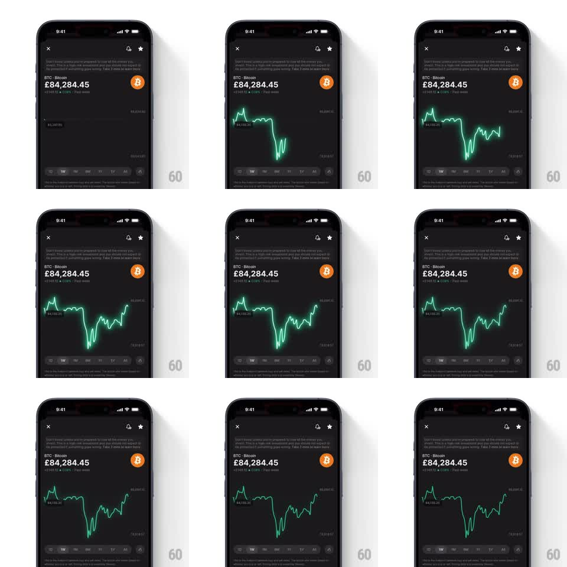

Media
Frame-by-frame

Rebuild this animation 1:1: Revolut's glowing chart load - the neon-green price line draws itself left to right with a soft glow, its gradient fill blooming underneath as the stroke travels.

Rebuild this animation 1:1: Revolut's glowing chart load - the neon-green price line draws itself left to right with a soft glow, its gradient fill blooming underneath as the stroke travels. ## Integration Integration: stack-agnostic spec - springs given as stiffness/damping, timed motions as duration + curve; map every value to your framework and animation library of choice. ## Scene Dark coin-detail screen: header icons, coin name + price figure + delta, empty chart area with faint min/max labels, timeframe tabs below. ## Motion spec Pattern: stroke draw with glow trail, ~1.6s. - The line strokes on left to right (stroke-dashoffset, 1.4s, ease-in-out), 2px core with a neon glow (blur ~10px, ~50% alpha) that travels with the draw head - the head is the brightest point. - The area fill under the line fades in beneath the drawn portion only (gradient, line color at ~30% alpha at the stroke fading to transparent at the baseline), tracking the head. - When the draw completes, the glow settles to a resting intensity (~30% alpha, 300ms). - Price figure and header are already in place; only the chart animates. ## Calibration - Fill reveals with the head, never ahead of it - fill appearing under undrawn line spoils the trick. - Glow travels with the head; a static full-line glow from frame one reads as a filter, not an animation. ## Reduced motion Chart fades in complete (300ms). ## Don't miss - The draw follows the real data path point by point; no smoothed approximation that misses the sharp dips. - Resting glow stays subtle enough that axis labels remain readable through it.